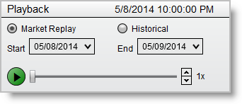
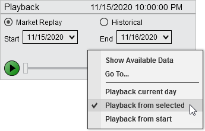

|
<< Click to Display Table of Contents >> Playback |


|
Playback
|
<< Click to Display Table of Contents >> Playback |
|
Once market replay data or historical tick data is available by either recording or downloading (See the "Set Up" page of the Help Guide), it can be replayed in all NinjaTrader windows.
 How to connect to Market Replay data
How to connect to Market Replay data
Connecting to Replay DataTo connect to Market Replay data:
1.Left mouse click on the Connections menu in the Control Center 2.Select the menu item Playback Connection menu item
The Playback connection should now be connected and the Playback Control should be visible.
|
Playback ControlOnce connected to the Playback connection (see the "How to connect to Market Replay data" section above for how to connect), the Playback control window will appear.
In the caption bar of the Playback control you will see the current date and time of where the play head is located.
ControlsThe Playback control is set up much like a DVD player. The following controls are available:
 |
||||||||||||
Right Click MenuRight mouse clicking in the Replay control window will bring up the right click menu with the two following menu items:

|
 Understanding how the Playback works
Understanding how the Playback works
Playback supports running on Market Replay data or Historical data. Market Replay data is the most accurate and holds both level I and level II (market depth) data. If you do not have market replay data for a time frame, you can choose to playback historical tick data. However using historical tick is less accurate as there is no level II data.
Market Replay DataNinjaTrader stores level I and level II together in a single market replay file to ensure that level I and level II events are perfectly in sync per instrument.
Market replay files have the ability to record time stamps down the 100 nanosecond level. However please note that we use the time stamp provided by the market data providers when storing data. This means that you are limited to the granularity of the provider if the time stamp is natively provided. Please see the Historical & Real-Time Data section of the help guide for more information.
Historical DataWhen using Historical data for playback NinjaTrader will use historical tick data for playback. If the tick data from your provider is stamped with ask and bid data then NinjaTrader will use that to simulate the ask and bid price during playback. If your historical data provider does not support ask/bid stamped tick data then NinjaTrader will simulate the ask and bid price by setting it either to last price or last price +/- 1 tick at random.
Order Processing Differences in PlaybackWhen submitting orders to the Playback101 account, these orders are processed immediately and synchronously. This enables reproducible results for strategy developers that run a strategy on the playback connection. Playback101 and Sim101 work differently when executing, since simulated internet latency delay simulation is not present in playback. |